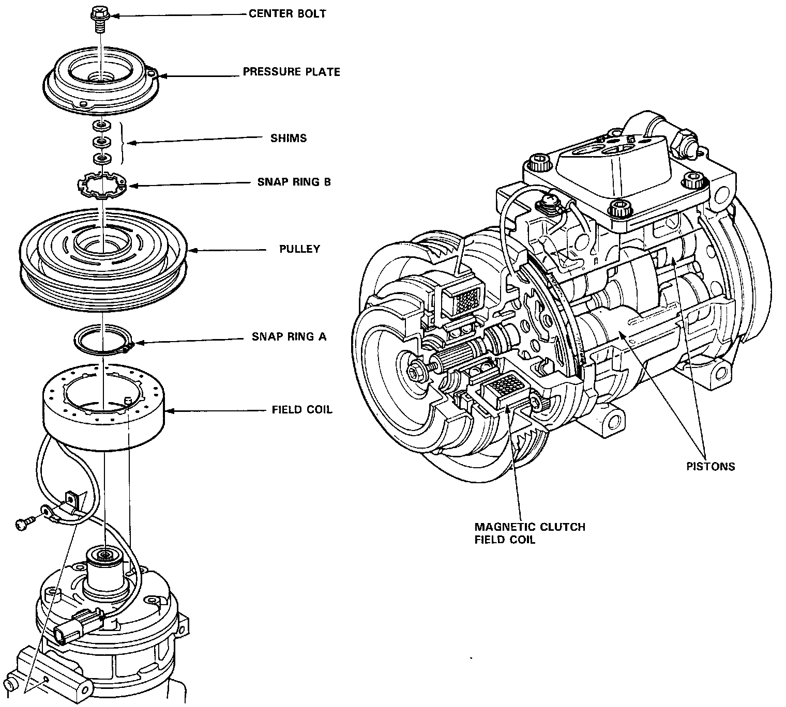

Compressor HVAC: Description and Operation

Description
This compressor is a Nippondenso piston type. A revolving inclined disc drives the surrounding 10 reciprocating pistons. As the inclined disc revolved, it pushes the pistons, protected by a ceramic shoe, thus compressing the refrigerant.